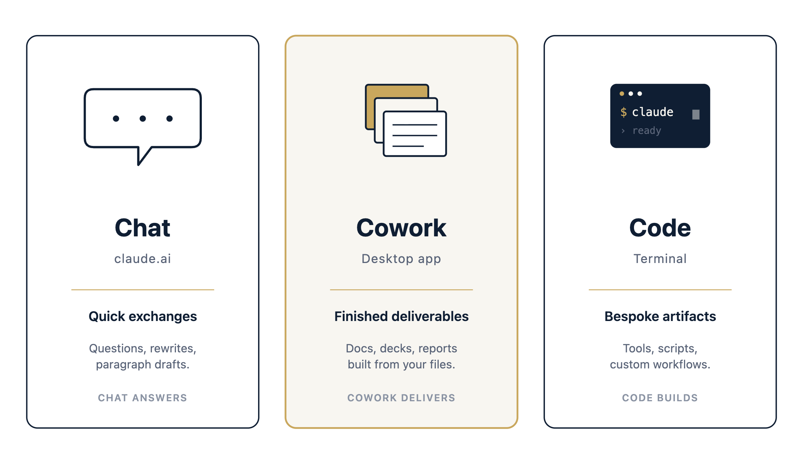
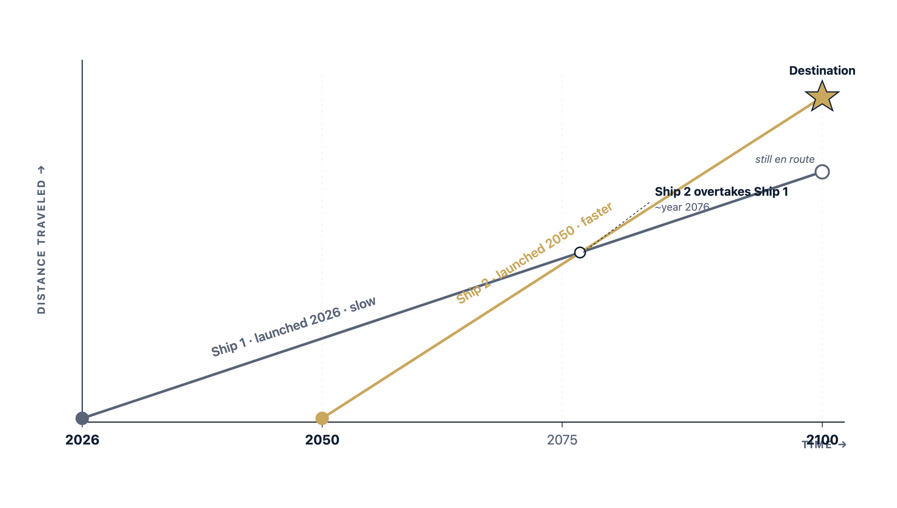

Working session 2
Day to day with AI.
Today's agenda
- Where we left off, and how Levie thinks about adoption~5 min
- Three ways to work with Claude — Chat, Cowork, and Code~7 min
- Before you start: terminal basics~5 min
- Using Claude Code day to day~6 min
- Building your Operational Context Center~6 min
- Two dials: automation and risk~8 min
- The wait calculation~5 min
- Four projects to practice between now and next session~8 min
Where we left off
Two weeks ago we installed Claude Code on your laptop and worked through the first prompts.
The goal of the next sixty minutes is to leave you with three things:
- A clearer picture of which Claude surface to use for which kind of work.
- A starter folder of conventions and frameworks that any future AI tool can read.
- Four concrete projects to continue exploring with AI.
Everyone is trying to untangle what AI adoption means in practice
The implementation gap between having a chat window open and having agents running on production work is wider than most teams plan for, and that gap is where the actual job is.
Part 1
Three ways to work with Claude
3 slides · ~7 min
Chat, Cowork, Code
There are three places you'll run into Claude, and they behave like three different products because they are. Knowing which one to reach for is most of the skill.
Chat is the conversational surface at claude.ai. You ask a question and you get an answer in the same window. Best for quick exchanges — sanity-checking a claim before a meeting, summarizing a dense PDF, drafting a paragraph you can paste somewhere else.
Claude Cowork is the desktop application. You point it at a folder or a connected system (Outlook, Drive, Slack, a spreadsheet) and you describe the outcome you want. Cowork plans the steps, executes them, and gives you back a finished deliverable.
Claude Code is the terminal application. It runs on your laptop, reads and writes files in a project folder, and can run shell commands. Best when you want something bespoke — a small web tool, a script that processes a CSV, a one-pager generated from a profile.

When to reach for each
The decision is usually obvious once you state the task out loud. If the table feels arbitrary, the rule of thumb is that Chat answers, Cowork delivers, and Code builds.
| If the task is… | Reach for | Why |
|---|---|---|
| A question, a rewrite, a quick brainstorm | Chat | Fast, conversational, no setup. |
| Research, analysis, or a finished document built from your files and systems | Claude Cowork | Folder access, connectors, skills, scheduled runs. |
| Writing, testing, or shipping something custom (homebrew apps or interactive artifacts) | Claude Code | Codebase access, file edits, shell, dev environments. |
Using AI today progresses from Chat, all the way to reinventing workflows
| Usage complexity | What it looks like |
|---|---|
| 0 | Use Chat for questions and rewrites. Most people sit here. |
| 1 | Hand Claude a folder, get back a finished deliverable you actually use. |
| 2 | Turn that deliverable into a skill — one markdown file that runs the same task the same way every time. |
| 3 | Bundle skills together, schedule them to run on their own. |
| 4 | A full plugin for a specific function, maintained as shared infrastructure. |
The near-term focus for the next few months is climbing to a confident Level 1 — building kits. That means generating concrete artifacts you'd otherwise produce by hand: HTML tools that sit on your site, Excel sheets that summarize a position, written summaries of a client's situation. Once the kit exists, the harder work begins: noticing which workflows you repeat often enough to be worth encoding, and identifying where a small piece of automation would compound. That second phase is what Level 2 and Level 3 actually look like in practice.
Part 2
Before you start: terminal basics
1 slide · ~5 min
Navigating, and a clean working folder
Before you ever type claude, you need to be in the folder you want Claude to work in.
| Task | Mac · Linux | Windows PowerShell |
|---|---|---|
| Show where you are | pwd | pwd |
| List what's in this folder | ls | ls or dir |
| Go into a folder | cd folder-name | cd folder-name |
| Go back up one folder | cd .. | cd .. |
| Make a new folder | mkdir folder-name | mkdir folder-name |
| Open the folder in Finder/Explorer | open . | explorer . |
cd ~/Documents
mkdir claude-work
cd claude-work
claudeThat sequence creates a folder called claude-work inside Documents, moves into it, and starts Claude Code there. Every project from here on can live as a subfolder inside claude-work.
Part 3
Using Claude Code
2 slides · ~6 min
Daily commands
These are the commands you'll use most days. There are more, but you don't need them yet.
| Command | What it does |
|---|---|
claude | Start a session in the current folder. |
/init | Have Claude read your project and write a CLAUDE.md file describing it. |
/clear | Clear the current conversation; keep the folder context. |
/resume | Pick up an earlier conversation by name. |
/model | Switch which Claude model you're using. |
/login and /logout | Sign into or out of your Anthropic account. |
/permissions | See and edit which tools Claude can run without asking. |
/help | List every command. |
The two worth committing to memory now are /init and /permissions. The first is how you give Claude its starting context for a project. The second is how you teach Claude what it's allowed to do without interrupting you each time.
What you type vs. what Claude does
When you type a sentence into Claude Code, Claude breaks it into a sequence of small tool calls — read this file, search for that string, run this command. Most of the work happens in those tool calls. Watching them go by, even loosely, gives you a feel for what's possible.
| What you type | What Claude does under the hood |
|---|---|
| "Summarize what's in this folder." | Glob to list files, then Read on each, then writes a prose summary. |
| "Find every place we mention the FIRE calculator." | Grep across the folder, then Read the matching files for context. |
| "Make a one-pager for this new client based on this profile." | Read the profile, then Write a new file containing the one-pager. |
| "Set this project up so I can come back to it later." | /init triggers Read of README, package files, source tree, then Write a CLAUDE.md. |
| "Pull last week's market commentary from my notes and draft a newsletter intro." | Read your notes folder, optionally Grep for dates, then drafts a new file. |
Part 4
Build your Operational Context Center
2 slides · ~6 min
What an Operational Context Center is, and why now
A folder of plain markdown files that encode how you work and how Passport to Wealth presents itself. The same folder feeds every Claude surface — and every future model that reads files.
What to put in it
| Individual practice | Firm-level |
|---|---|
| Your meeting-note template — the structure you use every time. | The PTW house view on the top five planning topics you get asked about. |
| Your standard pre-meeting prep checklist. | Your fee structure and engagement model, written out in normal sentences. |
| A running list of common client questions, with your standard answers. | Standard disclosures and compliance language you reuse. |
| Your default follow-up email shape. | The PTW brand voice guide — tone, what to avoid, examples of good and bad copy. |
| Notes on your top five client jurisdictions and the residency/tax quirks each one has. | A one-page description of who PTW serves and who it doesn't. |
You don't have to start with all ten. Pick three, write them as plain markdown files, and put them in a folder called context inside your claude-work folder — that folder is the Operational Context Center on disk. The next time you ask Claude for something client-facing, point it at that folder. The difference in output will be obvious.
Part 5
Two dials: automation and risk
3 slides · ~8 min
Increasing automation
Give Claude more context up front, so it asks fewer questions and produces better output without supervision. Four levers worth knowing:
| Lever | What it does |
|---|---|
| CLAUDE.md | A file at the root of a project that Claude reads at the start of every session. Project conventions live here. |
| Skills | Markdown files describing a specific task in enough detail that Claude runs it the same way every time. |
| Allowed tools | Pre-approve specific commands in a settings file so they don't trigger a permission prompt each time. |
| Headless runs | Claude executing a defined task end-to-end on a schedule or trigger, without sitting in front of you. Level 3 territory. |
Decreasing risk
The risk surface is getting smaller over time as models and tooling mature, but it does not go to zero. This is the first widely-deployed category of software with agency — Word, Excel, and Slack sit still until you click; Claude takes actions on your behalf.
Four habits worth keeping for the foreseeable future:
- Work in a fresh folder for anything experimental, not where your real client documents live.
- Initialize git in any project folder before Claude does heavy work, so you can roll back.
- Leave permission mode set to ask. Only pre-approve specific commands you understand.
- No AI tool gets full write access to production — CRM, live website, email — until the guardrails are real and tested.
Client data: where it goes
Each Claude surface handles data differently. If you're a fiduciary handling client information, knowing which surface keeps what where is part of your basic duty of care. This is the short version; Anthropic's data policy pages are the long version, and worth a careful read at some point.
| Surface | What leaves your laptop | What stays local | Audit-trail posture |
|---|---|---|---|
| Chat (claude.ai) |
The full conversation, sent to Anthropic. On a consumer plan, conversations may be retained up to 5 years and used to train future models unless you've explicitly opted out. On Team or Enterprise, conversations are not used for training; retention is 30 days. | Nothing. The conversation lives on Anthropic's servers. | Your account history in the web UI. |
| Cowork (desktop) |
The prompts you send, plus the specific file contents Claude needs to read to do the task. Claude does not upload your whole folder — only what it pulls in. On Team/Enterprise, data is not used for training. | Everything in your local files and connected systems, unless Claude is actively reading from them for a task. | Visible activity in the desktop app, plus your account history. |
| Code (terminal) |
The prompts you send, plus the contents of any files Claude reads or writes. On Team/Enterprise or API access, retention is 7 days and data is never used for training. | Your project folder and anything Claude has not been pointed at. | Git history (if you initialized git) plus a per-session transcript on your laptop. |
For client work, the practical guidance is to use a Team or Enterprise plan, keep Chat for non-sensitive questions and Cowork/Code for work that touches client information, and to use git in any project folder so you have a local audit trail you can review later.
Part 6
The wait calculation
2 slides · ~5 min
The spaceship paradox

Launch a slow ship to a distant star today; a faster ship launched fifty years later can still get there first.
What this means for you
- Build the smallest version of a thing that solves today's problem. Resist the urge to make it general.
- Expect to rebuild when capabilities change. The rebuild is not a sign you did it wrong; it's a sign the ground moved.
- Optimize for ease of rebuild, not durability. The Operational Context Center, your conventions, and your understanding of the workflow are what carry across versions. The specific tool you built around them does not need to.
Part 7
Four projects to practice
4 slides · ~8 min
Project 1 · Cross-border planning checklist
A single-page web tool that lives at a fixed URL on your site. A visitor answers four or five questions about their residency, citizenship, employer type, and household. The tool produces a tailored checklist of the planning decisions they should think about before our intro call.
- What it solves: the friction between landing on your site and deciding to book a call. A free, useful artifact gives them a reason to engage and to share their email.
- Rough scope: one HTML page, no backend. Logic is a small set of if-this-then-that rules you write out in plain language. Email capture goes to your existing mailing-list tool.
- What you'll learn: how to scope a single-page tool, how to give Claude Code a clear spec, how to deploy something publicly without standing up infrastructure.
- First step: open Claude Code in a new folder, describe the tool, let Claude propose a first draft.
Project 2 · FAQ from your meeting notes
You almost certainly answer the same five or six questions over and over in client meetings. Pulling those out into a written FAQ gives you a content asset for your site and a piece of your Operational Context Center. The point is not to publish a FAQ page that already exists somewhere — it's to harvest the FAQ that is implicit in your real meeting record.
- What it solves: turning repeated conversational work into a published asset. Every future client who reads the FAQ is one less repeat explanation in a meeting.
- Rough scope: export anonymized notes from your meeting record into a folder. Point Claude Code at the folder. Ask it to identify the recurring questions and draft answers in your voice, using your Operational Context Center for tone.
- What you'll learn: how Claude reads across many files at once, how to make it write in a specific voice, how to redline machine-drafted prose without losing your own voice in the process.
- First step: export ten anonymized note sets into a
notes/subfolder. Verify they're scrubbed of identifying information before pointing Claude at them.
Project 3 · Onboarding doc kit per new client
Every new client gets roughly the same welcome packet — an intro letter, a what-to-expect timeline, a data-collection sheet, instructions for sharing documents securely. Today you assemble that packet by hand. The project is to turn a short profile of the new client into a generated kit you only need to spot-check.
- What it solves: thirty to sixty minutes of administrative assembly per new client, delivered the same way every time. The kit also reads like you wrote it, because it pulls from your Operational Context Center.
- Rough scope: a small Claude Code project that takes a one-paragraph client profile as input and writes four documents as output. The templates for each document are markdown files in your Operational Context Center.
- What you'll learn: how to combine your conventions (the Operational Context Center) with a specific input (the profile) to produce repeatable output. This is the basic shape of a "skill" in Anthropic's vocabulary.
- First step: write your current onboarding documents as markdown templates with
{{placeholder}}markers where the client-specific details go. That alone is a useful exercise.
Project 4 · Build a portfolio review tool
Inspired by an independent developer's writeup: he handed Claude Code a brokerage CSV and a few stated goals (income needs, tax bracket, retirement horizon) and got back a phased rebalancing plan with tax-impact analysis. An evening of work that replaced a week of spreadsheet building. (writeup)
- What it solves: the same review you do client-by-client, but with a repeatable input format and a draft output you only need to refine. Faster prep, more consistent recommendations.
- Rough scope: a Claude Code project that reads a holdings CSV plus a one-paragraph client profile, then drafts a phased plan with rationale, tax notes, and questions to confirm in the next meeting.
- What you'll learn: how to feed Claude structured numerical data alongside qualitative context, how to constrain output to your house format, how to keep recommendations conservative by default.
- First step: take one anonymized client's recent holdings export and a short profile, drop them into a fresh folder, and ask Claude Code to produce a draft review.
What should you do next?
- Create the folder structure we set up today. Inside
~/Documents/claude-work/, make acontextsubfolder — your Operational Context Center on disk — and put at least three markdown files into it: your meeting-note template, your top five recurring client questions with your standard answers, and a one-page description of who PTW serves. - Pick one of the four projects above and do the first step. Just the first step. You don't need to finish the project; you need to start it so we can talk about what was hard and what was easier than expected.
- Send me a note about anything that broke, anything that felt awkward, or any moment when you weren't sure what to type. Those are the parts worth focusing on next time.